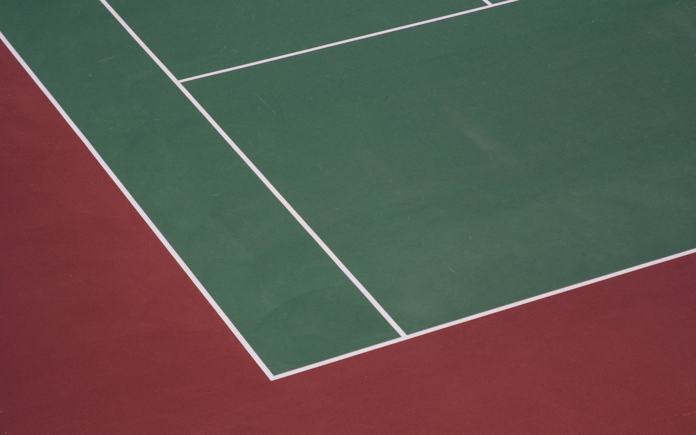
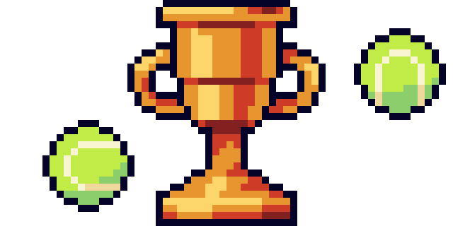

3ª LIGA DE LOS NARANJOS - Liga Píxel
¡Llega la 3ª edición de nuestra liga! Gracias a todo vuestro apoyo podemos seguir realizando estos eventos, ¡y en esta ocasión estrenamos página web! Recordad que podéis contactar con Juana para comprar camisetas personalizadas, cuyos beneficios se destinarán a que esta liga siga adelante. Entre otras cosas, el dinero irá para los premios que ofrecemos por primera vez en esta edición. Si quedas dentro del podio, ¡te podrás llevar algunas recompensas!
Formato de la liga
¡Tenis al puro estilo del videojuego! Estrenamos formato nuevo con mecánicas que pondrán todas las cartas sobre la mesa.
Voy a apostarlo todo e intentar ganar con tres vidas.
En esta liga además de puntos, habrá Puntos de Vida. Cada jugador tiene tres vidas, y cada vez que pierda un partido, también perderá una vida. Si llegas a 0, ¡estás fuera! Ganar un partido te otorga 10 puntos, y si ganas tres seguidos consigues un Combo, que otorga 15 puntos extra.
¡Todo al rojo! Los jugadores que tengan dos vidas o más pueden apostar cada partido dos vidas en vez de una. Si pierde, se eliminan dos vidas, pero si se gana, se obtienen 10 puntos extra.
Cada partido tendrá una duración predeterminada de 1 hora o 1 set, lo que ocurra antes. Se permite que ambos jugadores acuerden que se extienda la duración de un partido, pero debe comunicarse al encargado con al menos dos días de antelación.
En esta liga prima la estrategia. Elige bien tus cartas y llega a la cima. ¡El que tenga más puntos cuando sólo quede un jugador gana!